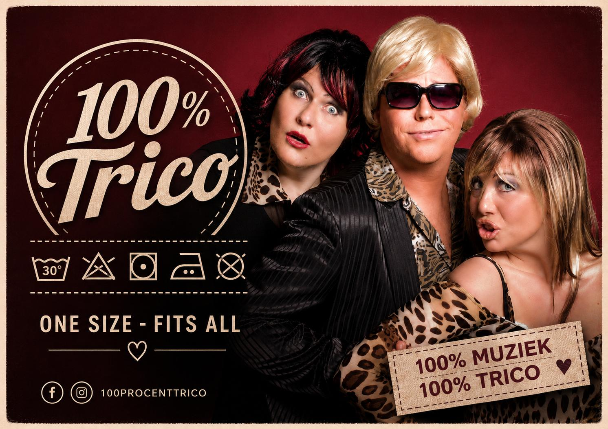
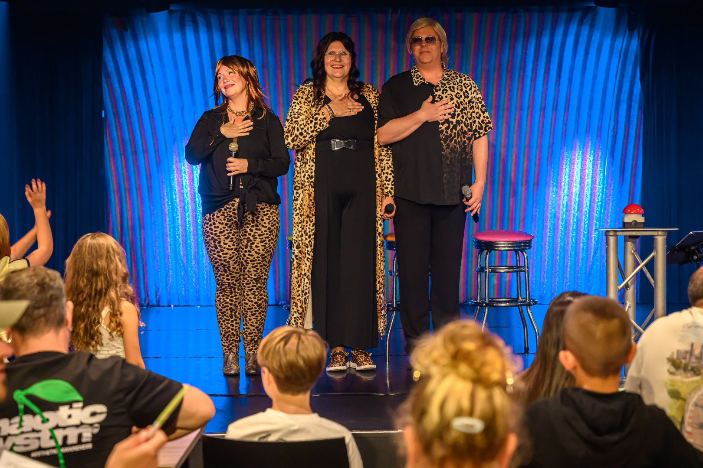
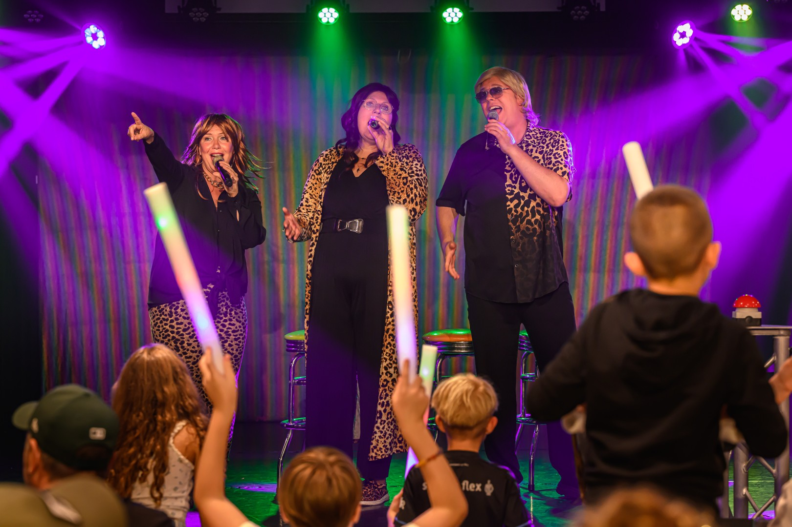
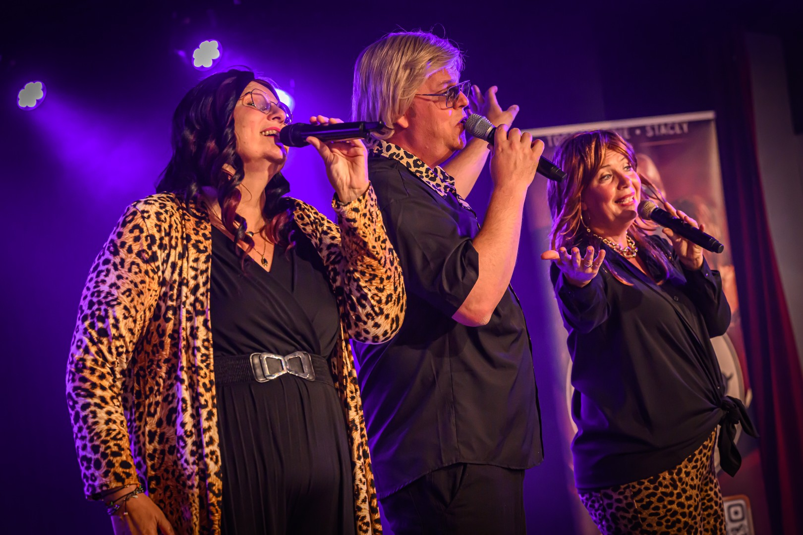

Muziekbingo
Drie rondes, alle hits live gezongen, bingokaarten voor alle gasten en volop prijzen. Meezingen en dansen wordt beloond.
Ontdek de Muziekbingo →
100% Trico | ONE SIZE – FITS ALL
Muziekbingo, dinershows en live entertainment vol zang, humor en interactie. Van één muzikaal blok van ongeveer een half uur tot een compleet avondprogramma: 100% Trico maakt het op maat.

Welke Trico past bij jullie?
Geen standaardprogramma waar jullie in moeten passen. We kijken naar de gelegenheid, het publiek en de beschikbare tijd en maken daar een passende Trico van.
Drie rondes, alle hits live gezongen, bingokaarten voor alle gasten en volop prijzen. Meezingen en dansen wordt beloond.
Ontdek de Muziekbingo →Live zang tussen de gangen door, met smartlappen, Hollandse hits, Songfestival, jaren 70, een quiz én de Foute Verloting.
Ontdek de Dinershow →Boek één blok van ongeveer 30 minuten, combineer meerdere muziekblokken of maak er samen met ons een compleet avondprogramma van.
Stel jouw Trico samen →

Geen standaard bingo
Vergeet de bingomolen en nummers als B12. Bij deze bingo draait alles om muziek! Iedereen ontvangt een bingokaart en vervolgens zingt 100% Trico de hits live. Herken je een nummer op je kaart? Kruisen maar!
We spelen drie rondes. Ondertussen wordt er gezongen, gelachen en natuurlijk fanatiek gespeeld voor die felbegeerde bingo.
En stil op je stoel blijven zitten is geen slimme tactiek. Tussendoor geven we volop extra prijzen weg aan enthousiaste gasten die lekker hard meezingen, dansen en helemaal opgaan in de muziek.
Eten met een flinke portie Trico
Tussen de gangen door duikt de Familie Trico steeds opnieuw op. Van smartlappen en Hollandse hits tot Songfestival en jaren 70: iedere gang krijgt zo zijn eigen showmoment.
En er gebeurt meer dan zingen alleen. Tijdens de Dinershow spelen we een quiz en delen we lootjes uit voor onze Foute Verloting, met natuurlijk de nodige grappige prijzen.
Zo wordt een diner geen avond waarop er toevallig muziek is, maar een avond vol zang, humor, interactie en gezelligheid.


ONE SIZE – FITS ALL
We kunnen op een feest, verjaardag, camping, bedrijfsbijeenkomst, dorpsfeest, festival of in een zorginstelling verschillende muzikale blokken verzorgen. Eén blok duurt ongeveer een half uur, maar combineren kan natuurlijk ook.
Kies bijvoorbeeld voor een blok Smartlappen & Hollandse hits, een blok Songfestival of een blok jaren 70. Eén blok, meerdere blokken of een compleet avondprogramma: het wordt afgestemd op jullie gelegenheid en publiek.
Herkenning, meezingers en Hollandse gezelligheid.
Een muzikaal blok vol herkenbare Songfestivalklassiekers.
Energie, disco en muziek waarbij stil blijven staan steeds lastiger wordt.





Maak kennis met de familie
100% Trico is een muzikale familie vol humor, herkenning en gezelligheid. Broer Adrie, zijn twee-eiige tweelingzus Toos en het nakomertje Stacey nemen je mee in hun eigen wereld.

De zelfbenoemde regelaar van de familie – en naar eigen zeggen een behoorlijk stoere bink.
Adrie Trico is de broer die ervan overtuigd is dat zonder hem werkelijk helemaal niets geregeld zou worden. Hij houdt graag de touwtjes in handen, deelt gevraagd én ongevraagd zijn mening en probeert tussen zijn twee luidruchtige zussen nog een beetje orde in de chaos te bewaren. Of dat lukt? Dat is een ander verhaal.
Adrie is getrouwd en vader van vijf kinderen. Die vinden het allemaal prachtig wat hun vader doet… zolang ze zelf maar lekker buiten de schijnwerpers blijven.
In een vorig leven had Adrie zijn eigen sloopbedrijf. Slopen, aanpakken en niet te veel zeuren: dat past hem wel. Die mentaliteit neemt hij ook mee binnen de familie Trico. Al ontdekt hij regelmatig dat een gebouw slopen waarschijnlijk eenvoudiger is dan zijn zussen Toos en Stacey in het gareel houden.
Hij vindt zijn zussen veel te luidruchtig, bemoeizuchtig en aanwezig. Helaas voor Adrie zijn zij precies hetzelfde over hem van menin

Toos Trico is het kloppende familiehart van 100% Trico. Een echt gezelligheidsdier dat het liefst onder de mensen is. Geef haar een buurtbingo, een kop koffie en een tafel vol bekenden en Toos heeft een topavond. Al helemaal als er iets te winnen valt.
Thuis kan ze uren verdwijnen in haar grote liefde: diamond painting. Steentje voor steentje werkt ze geduldig aan de mooiste kunstwerken. Een geduld dat ze in de liefde overigens een stuk minder heeft… want Toos is snel verliefd. Een leuke blik, een beetje aandacht en voor je het weet heeft ze de trouwlocatie in haar hoofd al uitgezocht.
Ook is Toos gek op tv-quizzen. Vanuit de bank weet ze opvallend vaak het juiste antwoord en begrijpt ze werkelijk níéts van kandidaten die het fout hebben. Zelf meedoen? Graag! Want naast slim zijn – al krijgt ze thuis niet altijd de kans dat te bewijzen – staat Toos ook maar wat graag in de spotlight.
Familie, gezelligheid, bingo, glittersteentjes, televisie én een beetje romantiek: dat is Toos. En zodra de muziek begint en de spotlights aangaan, weet ze één ding zeker:
Dit is míjn moment. Adrie, aan de kant!

De benjamin van de familie – en bepaald niet de stilste.
Stacey Trico is het nakomertje van de familie en weet als geen ander hoe je aandacht krijgt én vasthoudt. Ze is ondeugend, een tikje losbandig en vooral dol op praten. Sterker nog: als Stacey eenmaal begint, is de kans klein dat iemand anders nog aan de beurt komt.
In het dagelijks leven heeft Stacey zich gespecialiseerd in permanent zetten en permanente make-up. Want volgens Stacey is er maar één ding erger dan een slechte coupe: er iedere ochtend opnieuw iets aan moeten doen.
Als benjamin denkt ze dat ze overal mee wegkomt. En vervelend genoeg lukt haar dat meestal ook. Ze houdt van gezelligheid, een drankje, een feestje en heeft altijd wel een verhaal waarvan de rest van de familie zich afvraagt of het écht zo gebeurd is.
Op het podium zorgt Stacey voor spontaniteit, humor en een gezonde dosis chaos. Ze flirt met het publiek, bemoeit zich overal mee en heeft over werkelijk alles een mening.
Stacey Trico: permanent ondeugend, ijdel.

Muziek. Humor. Gezelligheid.
Of het nu gaat om een bedrijf, feest, camping, zorginstelling of evenement: we zoeken altijd naar de vorm die past bij het publiek en de gelegenheid.
100% Trico | ONE SIZE – FITS ALL


Zin in 100% Trico?
Heb je een datum, locatie of idee in gedachten? Bel of app ons rechtstreeks. We denken graag mee over welke act en welke lengte het beste bij jullie gelegenheid past.